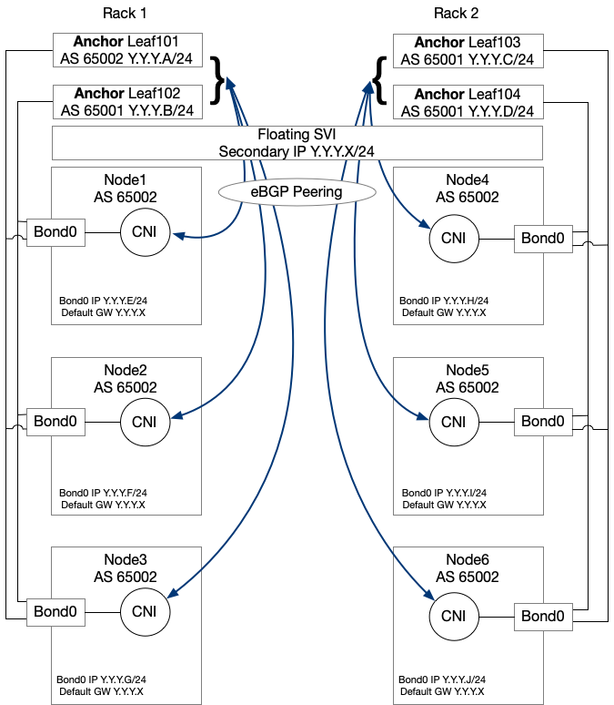

AKB Project Information
This is the ACI Kubernetes Bootstrapper Project.
Our goal is to provide a simple and automated way to deploy
a Kubernetes cluster and integrate it with ACI. Currently we support Calico as CNI plugin.
Both the ACI and Kubernetes Architecture are following the Floating SVI design as described in the
Cisco
Application Centric Infrastructure Calico Design White Paper.
All the optimizations and best practices of the design are implemented automatically on ACI.
AKB uses, under the hood, Terraform to push the ACI configuration and Deploy the VMs.
Ansible is used to configure the VMs, bootstrap and configure the Kubernetes Cluster.
High Level Architectuer
For details Refer to:
Cisco
Application Centric Infrastructure Calico Design White Paper
Calico supports two main network modes: direct container routing (no overlay transport protocol) or
network overlay using VXLAN or IPinIP (default) encapsulations to exchange traffic between workloads.
AKB will deploying Calico in direct routing mode.
Each Kubernetes node will have a dedicated AS number and will peer via eBGP with a pair of ACI
top-of-rack (ToR) switches configured in a vPC pair. Having a vPC pair of leaf switches provides redundancy
within the rack.
This eBGP design does not require running any route reflector in the Calico infrastructure; this results in
a more scalable, simpler, and easier to maintain architecture.
Once this design is implemented, the following connectivity is expected:
- Pods running on the Kubernetes cluster can be directly accessed from inside ACI or outside through
transit routing.
- Pod-to-pod and node-to-node connectivity will happen over the same L3Out and external end point
group (EPG).
- Exposed Services can be directly accessed from inside or outside ACI. Those services will be load
balanced by ACI through ECMP 64-way provided by BGP.
Network Architecture - Floating SVI
The floating SVI feature enables you to configure an L3Out without specifying logical interfaces. The
feature saves you from having to configure multiple L3Out logical interfaces to maintain routing when
virtual machines (VMs) move from one host to another. Floating SVI is supported for VMware vSphere
Distributed Switch (VDS) as of ACI Release 4.2(1) and on physical domains as of ACI Release 5.0(1). It
is
recommended using the physical domains approach for the following reasons:
- Can support any hypervisor
- Can support mixed mode clusters (VMs and bare-metal)
Using floating SVI also relaxes the requirement of not having any Layer-2 communications between
the routing nodes; this allows the design to use:
- A single subnet for the whole cluster
- A single encapsulation (VLAN) for the whole cluster
Pre Requisities
Before running this AKB there are a few required steps:
ACI
- Safety First: The Tenant, VRF and Physical Domain needs to be pre-configured on ACI. This is to ensure it is impossible by design to delete these objects by mistake
- vCenter/ESXi infrastructure needs to be configured and connected to ACI, VMM integration is supported but not requried
vCenter
{% include "_vc_requirements.html" %}
Under the hood of AKB
AKB is powered by the following technologies:
- Terraform: It is used to provision the ACI configuration, clone the VMs, customized the VM OS with basic parameters (IP, hostname) and generate the ansible configuration
- Ansible: It is used to Bootstrap the K8s cluster and perform all the VMs customizations
- Packer: It is used to package AKB in a VM form Factor
